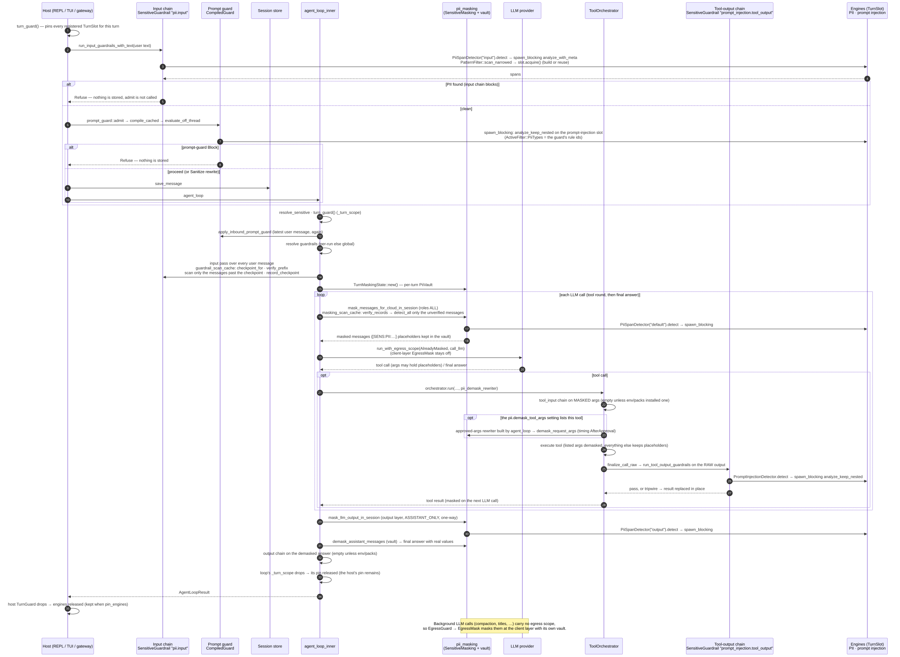

ARGO guardrails 구조 (UML)
1. 컴포넌트 / 패키지
모듈이 어디에 있고 무엇에 의존하는지 보여 줍니다. 대괄호는 그 모듈을 켜는 Cargo feature입니다.
guardrails::engine은 도메인을 모르는 엔진이고 항상 컴파일됩니다. 밖으로는sensitive::turn_scope(TurnSlot)에만 의존합니다.pii와prompt_injection은 그 엔진 위에 얹은 규칙 묶음이고, 각자 프로세스 공용 TurnSlot을 하나씩 둡니다.- 호스트는
install_guardrails_from_config하나로 들어옵니다. 이 함수는 전역 GuardrailSet의 input(PII)·tool_output(prompt injection) chain과 전역 SensitiveMasking을 채웁니다. 입력 prompt guard는 여기서 설치하지 않고CoreConfig.prompt_guard로 들어옵니다. agent::loop_는crate::guardrails를 직접 부르지 않고,agent와sensitive의 모듈을 거쳐서만 씁니다.

2. 한 턴의 시퀀스
PII full, tool output 검사와 prompt guard를 켜고 pin_engines는 끈 상태(tinicli 기본값)에서, 사용자 메시지 하나·도구 호출 하나·최종 답 하나로 이루어진 턴입니다.
- 호스트의 pre-persist gate는 PII 입력 검사를 먼저 하고, 통과하면 prompt guard
admit을 부릅니다. 어느 쪽이든 막히면 아무것도 저장하지 않습니다. - 모든 스캔은
spawn_blocking에서 돌고, 엔진은 그때 TurnSlot에서 얻습니다(턴 안에서는 한 번 빌드해 재사용). - LLM 입력은 매 호출마다 마스킹하되, masking_scan_cache가 확인된 메시지는 다시 스캔하지 않습니다. tool_input chain은 마스킹된 인자를, tool_output chain은 원본 출력을 봅니다.
- 도구 인자는
pii.demask_tool_args에 적힌 것만 실제 값으로 되돌립니다. 최종 답은 vault로 되돌립니다. - 엔진은 호스트의 TurnGuard가 놓일 때 해제됩니다.
pin_engines가 켜져 있으면 상주합니다.

3. 클래스 (타입과 trait)
Rust에는 상속이 없으므로 struct와 trait 구현 관계로 그렸습니다. 필드와 메서드는 구조를 이해하는 데 필요한 것만 적었습니다.
3a. 엔진과 규칙 묶음
PatternEngine은 DFA chunk 엔진과 hand-written detector들(MatchEngine 구현체)을 담고, PatternFilter는 TurnSlot을 통해 그 엔진을 얻어 layer나 rule id로 결과를 좁힙니다. PII와 prompt injection의 detector는 tinicore-traits의 SensitiveDetector를 구현합니다.

3b. 가드레일 틀, 마스킹, 캐시, 설치
GuardrailSet의 네 chain은 tinicore-traits의 guardrail trait 목록이고, SensitiveGuardrail이 detector chain을 네 trait 모두에 맞춰 줍니다. 마스킹은 SensitiveMasking 정책과 턴마다 생기는 TurnMaskingState(vault)로 나뉩니다.
